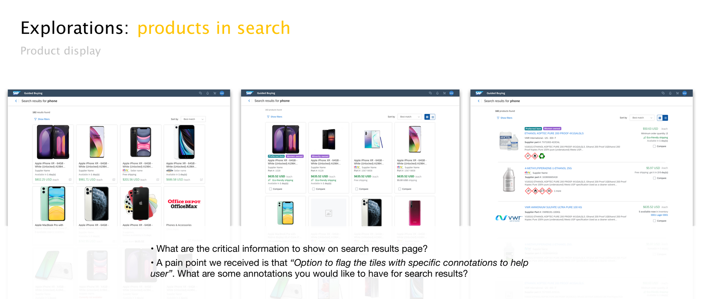

Search UX in SAP Ariba Guided Buying
Redefine search experience for B2B e-commerce solution for immediate business needs and long-term vision
Goals
- Redesign the search experience to help users find what they need with guidance and clarity
- Engage with customers over a course of few months for gathering feedback and setting expectations
Role
Being the sole designer on this project, I hypothesized, designed and tested the end-to-end search experience, and worked with PM, researcher and solution manager to inform about our immediate deliveries and long-term vision of search
Introduction
SAP Ariba Guided Buying, part of its parent procurement suite, was launched 5 years ago for casual buyers to make a purchase in a familiar e-commerce experience. However, as more features added to the platform to serve our 1M monthly unique users in multiple industries and regions, the search experience becomes really complex and confusing.
Framed as a customer engagement initiative topic, we were tasked to not only redefine a more helpful and pleasant search experience for our users but also communicate the story to customers through a series of design workshops.
{kind=link}
Project goals
Framed as a customer engagement initiative project, there are 2 goals for this project that are equally important:
üí° Redesign the search experience to help users find what they need with guidance and clarity
üí° Engage with customers over a course of few months for gathering feedback and setting expectations for both short term and long term
Research and understand
It's a big topic....where should we start?
Search is a big topic in Ariba Guided Buying. It's one of the main way users navigate and locate different procurement activities, ranging from purchasing a catalog items, finding a supplier to work with, to starting a sourcing events for quotes.
During the early discovery phase of this project, we designed a series of remote design workshops (pandemic format!) to firstly walking through the search journey and then decide the foci based on user values and team's priority.
1. Pain point haul
At the very beginning of the project, we collected past feedback, workshop notes and support tickets to identify patterns and familiarize the team with the context
{kind=link}
2. User journey walkthrough
We walked through the search journey with participants in the workshop to capture use cases, touch points and pain points
{kind=link}
{kind=link}
{kind=link}
Pivot
"It seems the pain points are too high level and not constructive..."
Pivot
Things weren't as linear as we thought eventually. ü§î
After synthesizing the pain points from the early workshops, we found out that even though the pain points we got were able to point out where breakdowns occur, they were too high-level to pinpoint the cause of pain points and inspire actionable solutions. Acknowledging the limitations, we re-evaluated our past workshop format, consulted customer engagement colleagues, and reformed the project timeline and structure.
Diverge again for feedback gathering
Understanding the gaps of actionable insights, I proposed to do deep dives in some of the high priority topics in the previous workshops. To tease out the feedback for specific areas, I created multiple mi-fi prototypes per topic that were designed intentionally to nudge for feedback and use cases.
We showed different mi-fi concept mocks for a topic to collect targeted feedback
{kind=link}
{kind=link}
Synthesize
Synthesizing the feedback, some key findings are:
Insight #1: Users may use different keywords to search, but system couldn’t tell the intent
Users might type in different attributes to search in catalog products, but the current system always prioritize searching by titles, which leads to low accuracy.
{kind=link}
Insight #2: There are multiple sources of results, but the current layout doesn’t encourage users to explore all types of results available to them
Current page layout displays different content sources in separate static sections on the page. While the search target could vary by company requirements, the target content might be buried down in the page. This rigid layout also hinders power users to reach the target efficiently.
{kind=link}
{kind=link}
Design highlights
Rethink the experience for the end-to-end search journey

Scoped search
While the technical constraints compromise the search accuracy, how can we help the system to support users better?
The search scope facets and suggestions provide users options to narrow down the scope of search early on in the process, without having to consume all results every time they search. By identifying the intent of search, the system suggests the most likely result types users are looking for, such as products or requisitions, for users to have control of their search scope
{kind=link}
Flexible navigation
Multiple entry points enabled by scoped search and prominent content type tabs on the top bar serve the different needs for both power and infrequent users. This allow infrequent users to understand what search results are available and power users to go to certain results efficiently.
{kind=link}
Explore page
The introduction of an explore page allows infrequent users, a large user base of our product, to browse all content types relevant to their search. They can navigate to relevant content section after having a clear and holistic understanding of what are available.

Product listings and list view
The new design provides more and relevant information scent, such as part number and availability, to help users decide which results they would like to learn more. The new design also improves the readability with legible labels and information hierarchy.
The list view allows users to have a more comprehensive product description to distinguish products within highly similar catalog. This is especially important for users from certain industries who have non-image driven catalog, such as pharmaceuticals or manufacturing.
{kind=link}
{kind=link}
Fallback guidance
The current search experience doesn't provide guidance for users to avoid dead-ends of their journey, and this resulted in more support emails and tickets for our customers. The new experience provides guidance for users in time at different point of search journey with search term suggestions, item recommendations and custom fallback options to prevent users from getting into a dead-end.

Impact
It's still ongoing!
While this project is an ongoing initiative (yes, I I'm probably using my coffee energy on this while you are reading this ☕️), the next steps for this project in the coming weeks are:
- Conduct user testing with end users (rather than workshop participants who are usually representatives of the customers) to validate our concepts further with a wider group
- Break down the design proposal into features that are immediately actionable / medium-term / long-term and plan it for the roadmap
...AND this is what we heard so far in regards to our project goals:
üí° Redesign the search experience to help users find what they need with guidance and clarity
üëâ "Put it in production a.s.a.p. Highly wanted by my end-users."
üí° Engage with customers over a course of few months for gathering feedback and setting expectations for both short term and long term
üëâ I have been to several CEI workshop like this, this has been the most productive one."
Going beyond "my project"
Search is a fundamental experience for a lot of procurement scenarios. While the design proposal and insights were based on the context of SAP Ariba Guided Buying and its current users, the impact of our work has extended beyond the current product. I'm currently supporting development for a brand new buying solution, and the learnings, previous stakeholder discussions and documentation have influenced strategic decisions from architectural level, and still served as a fundation to achieve an effective, pleasant search experience for users.
Takeaways
Communicate effectively within, across and outside of the team
Search is a topic that involves different teams, workstream and people in my organization. This project makes me truly believe that transparent communication across teams is crucial to design an experience that leverage what we know (from support team: what did customers say before?) and what we have (from data science team: what are they planning to release and tune soon?) as team. While the need for effective communication for this project even spans beyond my company, I also learned how to communicate professionally while achieving actionable outcomes by empathizing with the needs of different types of audience.
If I'd be able to start this project again from the beginning, I would strive to engage the point of contact from those relevant teams early on, instead of just leveraging their knowledge for brainstorming and validating. I also hope to make the ad hoc discussions we had, which turned out really fruitful for a lot of ongoing topics for the product team, to be more transparent and available for the product team, and documented in bite-sizes.